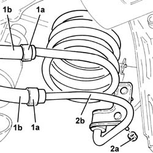

4130B58 HEAT EXCHANGER or COIL - R.R.
- Path
- Procedures > 41 STEERING > 4130 POWER ASSISTED STEERING > 4130B power steering hydraulic sytem > 4130B58 HEAT EXCHANGER or COIL - R.R.
- Kind
- repair procedure (removal / refitting; the operation number is the code)
- Applies to
- engines: 2.5 V6, 1.9 JTD 8v , 2.4 JTD 10v; all production periods
- Interactive page
- https://sloeber94.github.io/elrnDB-a156/en/#/3238145
Applies to: engines: 2.5 V6; all production periods
 Removing
Removing
 Refitting
RefittingPosition the vehicle on the ramp.
Drain the power steering fluid from the reservoir using a suitable syringe.
7055B54 under-engine guard - r r .
1. Slacken bands (1a) and disconnect the flexible hoses (1b) from the heat exchanger coil.
2. Undo nuts (2a) and remove the heat exchanger coil (2b).

Applies to: engines: 2.5 V6; all production periods
Refitting
RemovingPlace the heat exchanger coil back in its housing and secure it using the nuts.
Connect the flexible hoses to the heat exchanger coil and secure them using the bands.
7055B54 under-engine guard - r r .
Fill the power steering circuit with the recommended fluid.
 | Type | Component | Name | Qty. |
|---|---|---|---|---|
- | Fluid | POWER ASSISTED STEERING CIRCUIT | TUTELA GI/A | - |
Bleed the power steering system as described below
With the front wheels raised off the ground, with the engine switched off turn the steering wheel to full lock, left and right, 4-5 times.
Check and, if necessary, top up the fluid level in the reservoir.
Remove the car from the ramps.
Start the engine and carry out 4 - 5 full steering wheel turn cycles (right and left).
Top up the fluid level in the reservoir.
Applies to: engines: 1.9 JTD 8v , 2.4 JTD 10v; production: da 02/00 a 01/01, da 02/01 a 02/02, da 03/02 a 09/03, da 10/03
Removing
RefittingPosition the vehicle on the ramp.
Drain the power steering fluid from the reservoir using a suitable syringe.
Proceed with removal 7055B54 under-engine guard - r r .
1. Slacken bands (1a) and disconnect the flexible hoses (1b) from the heat exchanger coil.
2. Undo nuts (2a) and remove the heat exchanger coil (2b).
Applies to: engines: 1.9 JTD 8v , 2.4 JTD 10v; production: da 02/00 a 01/01, da 02/01 a 02/02, da 03/02 a 09/03, da 10/03
Refitting
RemovingPlace the heat exchanger coil back in its housing and secure it using the nuts.
Connect the flexible hoses to the heat exchanger coil and secure them using the bands.
Proceed with refitting 7055B54 under-engine guard - r r .
Fill the power steering circuit with the recommended fluid.
| Type | Component | Name | Qty. |
|---|---|---|---|---|
- | Fluid | POWER ASSISTED STEERING CIRCUIT | TUTELA GI/A | - |
Bleed the power steering system as described below
With the front wheels raised off the ground, with the engine switched off turn the steering wheel to full lock, left and right, 4-5 times.
Check and, if necessary, top up the fluid level in the reservoir.
Remove the car from the ramps.
Start the engine and carry out 4 - 5 full steering wheel turn cycles (right and left).
Top up the fluid level in the reservoir.